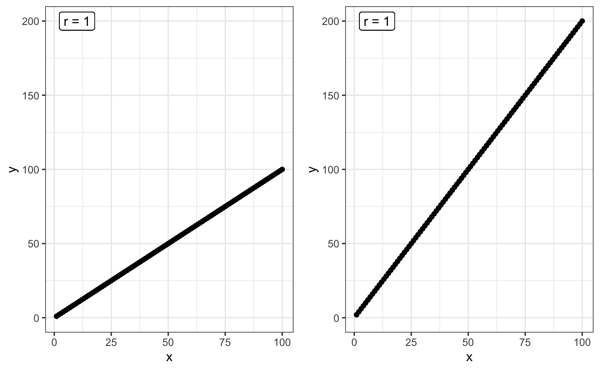

5 Séance 3 : corrélations et régressions
5.1 Packages et données
Comme dans tous les chapitres de cet ouvrage, nous aurons besoin ici du tidyverse et du package skimr. Noubliez pas de les charger en mémoire avant d’aller plus loin.
library(tidyverse)
library(skimr)Vous aurez également besoin du jeu de données intitulé suivants disponibles sur l’ENT :
birds.csvloups.csvropetrick.csv
5.2 Corrélation
5.2.1 Principe
Lorsque des variables numériques sont associées ont dit qu’elles sont corrélées. Par exemple, la taille du cerveau la taille du corps sont corrélées positivement parmi les espèces de mammifères. Les espèces de grande taille ont tendance à avoir un cerveau plus grand et les petites espèces ont tendance à avoir un cerveau plus petit.
Le coefficient de corrélation est la quantité qui décrit la force et la direction de l’association entre deux variables numériques mesurées sur un échantillon de sujets ou d’unités d’observation. La corrélation reflète la quantité de dispersion dans un nuage de points entre deux variables. Contrairement à la régression linéaire, la corrélation n’ajuste aucune droite à des données et ne permet donc pas de mesurer à quel point le changement d’une variable entraîne un changement rapide ou lent de l’autre variable.
Ainsi, sur la figure ci-dessous, le coefficient de corrélation entre X et Y est le même pour les deux graphiques : il vaut 1.

Ici, le coefficient de corrélation (noté \(r\)) vaut 1 dans les deux cas, car tous les points sont alignés sur une droite. La pente de la droite n’influence en rien la valeur corrélation. En revanche, la dispersion des points autour d’une droite parfaite a une influence :

Plus la dispersion autour d’une droite parfaite sera grande, plus la corrélation sera faible. C’est la raison pour laquelle lorsque l’on parle de “corrélation”, on sous-entend généralement corrélation linéaire. Ainsi, 2 variables peuvent avoir une relation très forte, mais un coefficient de corrélation nul, si leur relation n’est pas linéaire :

L’exploration graphique de vos données devrait donc toujours être une priorité. Calculer un coefficient de corrélation nul ou très faible ne signifie par pour autant une absence de relation entre les 2 variables numériques étudiées. Cela peut signifier une relation non linéaire. La solution la plus simple pour distinguer une relation telle que celle du graphique précédent, et une absence de relation telle que celle présentée dans le graphique ci-dessous, est l’examen visuel des données :

En bref, le coefficient de corrélation \(r\) est compris entre -1 et +1 :
- une forte valeur absolue (\(r\) proche de -1 ou +1), indique une relation presque linéaire
- une faible valeur absolue indique soit une absence de relation, soit une relation non linéaire (la visualisation graphique permet généralement d’en savoir plus)
- une valeur positive indique qu’une augmentation de la première variable est associée à une augmentation de la seconde variable
- une valeur négative indique qu’une augmentation de la première variable est associée à une diminution de la seconde variable.
Dans la suite de ce chapitre, nous allons voir comment calculer le coefficient de corrélation entre 2 variables numériques, et puisque nous travaillons avec des échantillons, ce calcul sera nécessairement entaché d’incertitude. Tout comme la moyenne ou la variance d’un échantillon, la corrélation est un paramètre des populations dont nous ne pourrons qu’estimer la valeur. Toute estimation de corrélation devra donc être encadrée par un intervalle d’incertitude, généralement, il s’agit de l’intervalle de confiance à 95% de la corrélation. Enfin, outre l’estimation de la valeur de la corrélation et de son incertitude, nous pourrons aussi faire des tests d’hypothèses au sujet des corrélations que nous estimerons.
5.2.2 Exploration préalable des données
5.2.2.1 Importation et examen visuel
Les adultes qui infligent des mauvais traitements à leurs enfants ont souvent été maltraités dans leur enfance. Une telle relation exsite-t-elle également chez d’autres espèces animales, chez qui cette relation pourrait-être étudiée plus facilement ? Müller et al. (2011) ont étudié cette possibilité chez le Fou de Grant (Sula granti), un oiseau marin colonial vivant entre autres aux Galápagos. Les jeunes laissés au nid sans attention parentale reçoivent fréquemment la visite d’autres oiseaux, qui se comportent souvent de manière agressive à leur encontre. Les chercheurs ont compté le nombre de ces visites dans le nid de 24 poussins dotés d’une bague d’identification individuelle. Ces 24 individus ont ensuite été suivis à l’âge adulte, lorsqu’ils sont à leur tour devenus parents. Les données récoltées par les chercheurs figurent dans le fichier Birds.csv. Importez ces données dans R dans un objet noté Birds.
Parsed with column specification:
cols(
nVisitsNestling = col_double(),
futureBehavior = col_double()
)Birds# A tibble: 24 x 2
nVisitsNestling futureBehavior
<dbl> <dbl>
1 1 -0.8
2 7 -0.92
3 15 -0.8
4 4 -0.46
5 11 -0.47
6 14 -0.46
7 23 -0.23
8 14 -0.16
9 9 -0.23
10 5 -0.23
# … with 14 more rowsLa première colonne de ce tableau indique, pour chaque individu suivi, le nombre de visites reçues au nid de la part d’adultes agressifs. La seconde colonne indique, pour ces même individus, le nombre de visites agressives effectuées à des nids d’autres poussins. Ce nombre n’est pas dans la même unité que la première variable puisqu’il a été corrigé par d’autres variables d’intérêt pour les chercheurs.
Il manque à ce tableau une variable indiquant le code des individus. Elle n’est pas indispensable, mais la rajouter est une bonne habitude à prendre pour toujours travailler avec des “données rangées” :
Birds <- Birds %>%
mutate(ID = factor(1:24))
Birds# A tibble: 24 x 3
nVisitsNestling futureBehavior ID
<dbl> <dbl> <fct>
1 1 -0.8 1
2 7 -0.92 2
3 15 -0.8 3
4 4 -0.46 4
5 11 -0.47 5
6 14 -0.46 6
7 23 -0.23 7
8 14 -0.16 8
9 9 -0.23 9
10 5 -0.23 10
# … with 14 more rows5.2.2.2 Statistiques descriptives
Comme toujours, la première chose à faire est d’examiner quelques statistiques descriptives pour se faire une idée de la forme des données et pour repérer les éventuelles données manquantes ou aberrantes.
skim(Birds)Skim summary statistics
n obs: 24
n variables: 3
── Variable type:factor ──────
variable missing complete n n_unique top_counts ordered
ID 0 24 24 24 1: 1, 2: 1, 3: 1, 4: 1 FALSE
── Variable type:numeric ─────
variable missing complete n mean sd p0 p25 p50
futureBehavior 0 24 24 -0.12 0.37 -0.92 -0.29 -0.1
nVisitsNestling 0 24 24 13.12 7.21 1 8.75 13
p75 p100 hist
0.18 0.39 ▅▁▅▁▇▅▇▇
15.75 31 ▃▃▆▇▁▅▁▁Outre le facteur ID que nous venons de créer, nous disposons donc de 2 variables numériques qui ne contiennent pas de données manquantes.
1. La variable nVisitsNestling, qui indique le nombre de visites agressives reçues par les individus suivis lorsqu’ils étaient de jeunes poussins, varie de 1 à 31, pour une moyenne de 13.12, une médiane proche (13) mais un écart-type important.
2. La variable futureBehavior varie de -0.92 à 0.39, avec une moyenne et une médiane proche de 0 (-0.12 et -0.1 respectivement).
À ce stade, il est possible de calculer le coefficient de corrélation linéaire entre les 2 variables :
Birds %>%
select(nVisitsNestling, futureBehavior) %>%
cor() nVisitsNestling futureBehavior
nVisitsNestling 1.0000000 0.5337225
futureBehavior 0.5337225 1.0000000Le résultat est obtenu sous la forme d’une matrice symétrique : - Sur la diagonale, les corrélation valent 1 (le coefficient d’une variable avec elle-même vaut toujours 1). - En dehors de la diagonale, on trouve le coefficient de corrélation linéaire entre les 2 variables d’intérêt. Ici, il est positif et vaut 0.533, ce qui est une valeur relativement élevée dans le domaine de la biologie ou de l’écologie.
5.2.2.3 Exploration graphique
Afin de savoir si la valeur moyenne de \(r\) calculée précédemment reflète une relation linéaire mais moyenne, ou une relation qui n’est pas vraiment linéaire, nous devons faire un buage de points :
Birds %>%
ggplot(aes(x = nVisitsNestling, y = futureBehavior)) +
geom_point() +
labs(x = "Nombre de visites reçues par le poussin",
y = "Comportement futur") +
theme_bw()
On constate ici que la corrélation moyenne obtenue plus haut est due au fait que les points sont assez dispersés, et non au fait que la relation n’est pas linéaire. On peut donc dire que la relation, si elle existe, n’est pas parfaite. Un test d’hypothèse devrait nous permettre de déterminer si la corrélation linéaire observée ici est significativement différente de 0 ou non
5.2.3 Le test paramétrique
Comme pour la plupart des grandeurs calculées à partir d’un échantillon, la corrélation \(r\) n’est qu’un estimateur de la corrélation qui existe réellement entre ces deux variables dans la population générale. Dans la population générale, la corrélation linéaire est généralement notée \(\rho\). Son estimateur, \(r\) est donc souvent noté \(\hat{\rho}\).
Les test d’hypothèse que nous allons faire maintenant permet de vérifier si le coefficient de corrélation \(\rho\) dans la population générale est différent de 0 ou non. Les hypothèses de ce test sont les suivantes :
- H\(_0\) : le coefficient de corrélation entre les deux variables étudiées vaut 0 dans la population générale (\(\rho = 0\))
- H\(_1\) : le coefficient de corrélation entre les deux variables étudiées est différent de 0 dans la population générale (\(\rho \neq 0\))
Ce test est réalisé dans R grâce à la fonction cor.test().
5.2.3.1 Résultats du test et interprétation
cor.test(Birds$nVisitsNestling, Birds$futureBehavior)
Pearson's product-moment correlation
data: Birds$nVisitsNestling and Birds$futureBehavior
t = 2.9603, df = 22, p-value = 0.007229
alternative hypothesis: true correlation is not equal to 0
95 percent confidence interval:
0.1660840 0.7710999
sample estimates:
cor
0.5337225 Le test réalisé ici est le test de corrélation de Pearson. Il s’agit d’un test paramétrique dont les conditions d’application sont expliquées plus bas. Comme pour tous les tests examiné jusqu’ici, les premières lignes des résultats fournissent toutes les informations utiles au sujet du test. Ici, on peut dire :
Au seuil \(\alpha = 0.05\), le test de corrélation de Pearson a permis de rejeter l’hypothèse nulle selon laquelle la corrélation entre le nombre de visites agressives au nid des poussins et leur futur comportement agressif sont indépendants (\(t = 2.96\), \(ddl = 22\), \(p = 0.007\)).
Ce test prouve donc que \(\rho\) est statistiquement différent de 0. La valeur de 0.53 observée ici n’est pas due au hasard de l’échantillonnage.
Comme toujours, les résultats du test que nous avons réalisé ne nous disent rien de la valeur de la corrélation estimée, ni de son incertitude. Il nous faut pour cela examiner les autres lignes fournies par R lorsque nous faisons ce test et qui relèvent de l’estimation (voir section suivante).
Dernière chose concernant ce test : nous avons fait ici un test bilatéral comme nous le rappelle cette ligne des résultats :
alternative hypothesis: true correlation is not equal to 0
Comme pour les tests de comparaisons de moyennes, il est possible de réaliser un test unilatéral, à condition que cela ait un sens, à condition que nous soyons en mesure d’expliquer le choix de notre hypothèse alternative. La syntaxe est la même que pour les tests de Student ou de Wilcoxon : on utilise l’argument alternative = "less" ou alternative = "greater" au moment de faire le test, selon l’hypothèse que l’on souhaite tester.
Ici, si les hypothèses que nous souhaitons tester sont les suivantes :
- H\(_0\) : le coefficient de corrélation entre les deux variables étudiées vaut 0 dans la population générale (\(\rho = 0\))
- H\(_1\) : le coefficient de corrélation entre les deux variables étudiées est positif dans la population générale (\(\rho > 0\))
On utilise la syntaxe suivante :
cor.test(Birds$nVisitsNestling, Birds$futureBehavior,
alternative = "greater")
Pearson's product-moment correlation
data: Birds$nVisitsNestling and Birds$futureBehavior
t = 2.9603, df = 22, p-value = 0.003615
alternative hypothesis: true correlation is greater than 0
95 percent confidence interval:
0.2320921 1.0000000
sample estimates:
cor
0.5337225 Comme pour les autres test unilatéraux, le choix d’une hypothèse alternative aberrante se traduit par une \(p-\)value très forte, généralement égale à (ou très proche de) 1.
5.2.3.2 Estimation et intervalle de confiance
Revenons à notre test bilatéral. La section “estimation” des résultats de ce test nous indique que la meilleure estimation du coefficient de corrélation lineeaire de Pearson dans la population générale vaut \(\hat{\rho} = 0.533\). C’est la valeur que nous avions calculé à la main avec la fonction cor().
L’intervalle de confiance à 95% de cette valeur estimée est également fourni. La conclusion de cette procédure pourrait donc être formulée de la façon suivante :
Au seuil \(\alpha = 0.05\), le test de corrélation de Pearson a permis de rejeter l’hypothèse nulle selon laquelle la corrélation entre le nombre de visites agressives au nid des poussins et leur futur comportement agressif sont indépendants (\(t = 2.96\), \(ddl = 22\), \(p = 0.007\)). La meilleure estimation de ce coefficient de corrélation dans la population générale vaut \(\hat{\rho} = 0.533\). La vraie valeur dans la population générale a de bonnes chances de se trouver dans l’inervalle [0.17 ; 0.77] (intervalle de confiance à 95%).
5.2.3.3 Conditions d’application
Ce test est un test paramétrique. Pour avoir le droit de le réaliser, il nous faut donc vérifier les conditions d’application suivantes :
- Les individus doivent être indépendants les uns des autres
- Les mesures effectuées doivent suivre une distribution Normale bivariée
Sauf si on a de bonnes raisons de penser le contraire, on considère généalement que si l’échantillonnage a été fait de façon aléatoire, l’indépendance des observations est garantie. La condition de “distribution Normale bivariée” des données est en revanche nouvelle. Elle suppose essentiellement que les 3 critères suivants soient vérifiés :
- La relation entre les 2 variables doit être linéaire. C’est que nous tentons de vérifier visuellement en réalisant un nuage de points des données.
- Sur un graphique représentant une variable en fonction de l’autre, le nuage de points doit avoir une forme circulaire ou elliptique. Là encore, une représentation graphique nous permet d’apprécier cette condition.
- Les 2 variables étudiées doivent suivre une distribution Normale dans la population générale. Avant de faire ce test, il nous faut donc vérifier la Normalité des données pour chacune des 2 variables séparément, à l’aide, par exemple, d’un test de Shapiro-Wilk.
Pour résumer, l’examen du nuage de points permet de vérifier les 2 premières conditions et 2 tests de Shapiro permettent de vérifier la troisième. Pour l’examen du nuage de points, les conditions ne seront pas remplies dans les situations suivantes (voir les exemples du graphique ci-dessous) :
- Le nuage de points a une forme d’entonnoir ou de nœud papillon
- Des ouliers sont présents (quelques points fortement éloignés du reste des observations)
- Une relation non linéaire entre les deux variables.
ENfin, si l’une, l’autre ou les deux séries de données ne suivent pas la loi Normale, il faudra faire un test non paramétrique.
5.2.4 L’alternative non paramétrique
Quand les conditions d’application du test de corrélation de Pearson ne sont pas remplies, il faut faire un test équivalent non paramétrique. Le test utilisé le plus fréquemment dans cette situation est le test du \(\rho\) de Spearman. On l’effectue comme le test de Pearson en précisant simplement un argument supplémentaire : method = "spearman" (sans maujscule) :
cor.test(Birds$nVisitsNestling, Birds$futureBehavior,
method = "spearman")Warning in cor.test.default(Birds$nVisitsNestling,
Birds$futureBehavior, : Cannot compute exact p-value with ties
Spearman's rank correlation rho
data: Birds$nVisitsNestling and Birds$futureBehavior
S = 1213.5, p-value = 0.01976
alternative hypothesis: true rho is not equal to 0
sample estimates:
rho
0.472374 Les test de Spearman est au test de Pearson ce que le test de Wilcoxon est au test de Student. Il travaille non pas sur les données brutes (ici, les mesures des scientifiques), mais sur des données modifiées, en l’occurence, sur les rangs des données. La première conséquence évidente est une perte de puissance notable par rapport au test de Pearson. Cette perte de puissance peut être ici observée par le biais de la \(p-\)value plus faible que pour le test précédent. Cela indique que même si la conclusion est la même, on rejette ici l’hypothèse nulle avec moins de confiance que pour le test de Peasron.
Le \(\rho\) de Spearman est équivalent au \(r\) de Pearson calculé sur les rangs des données. Lorsque plusieurs valeurs observées sont égales, plusieurs valeurs ont le même rang, ce qui cause l’apparition du message d’avertissement suivant :
Impossible de calculer la p-value exacte avec des ex-aequos
Ce message est sans conséquence tant que la \(p-\)value du test de Spearman est éloignée du seuil \(\alpha\). Mais quans \(p \approx \alpha\), il faut être particulièrement prudent quant à l’interprétation qui est faite des résultats.
Enfin, comme pour le test de Pearson, il est possible de réaliser un test de Spearman unilatéral en utilisant l’argument alternative = "less" ou alternative = "greater". Les précautions à prendre pour utiliser ce genre de test sont toujours les mêmes.
5.2.5 Exercices
5.2.5.1 Canis lupus
En 1970, le loup canis lupus a été éradiqué en Norvège et en Suède. Autour de 1980, un couple de loups, originaire d’une population plus à l’Est, a fondé une nouvelle population en Suède. En l’espace de 20 ans, cette population comptait approximativement 100 loups. Il y a toutefois fort à craindre qu’une population fondée par un si petit nombre d’individus souffre de consanguinité. Liberg et al. (2005) ont compilé les informations sur la reproduction dans cette population entre 1983 et 2002, et ils ont pu reconstruire le pédigrée des individus la composant. Ils ont ainsi été en mesure de déterminer avec précision le coefficient individuel de consanguinité dans 24 portées de louveteaux. Pour mémoire, le coefficient individuel de consanguinité vaut 0 si ses parents ne sont pas apparentés, 0.25 si ses parents sont frères et sœurs issus de grands-parents non apparentés, et plus de 0.25 si les associations consanguines se répètent depuis plusieurs générations.
On souhaite déterminer si le coefficient de consanguinité est associé à la probabilité de survie des jeunes durant leur premier hiver. Les données de Liberg et al. (2005) sont disponibles dans le fichier loups.csv. La première colonne contient les coefficients de consanguinité et la seconde, le nombre de jeunes de chaque portée ayant survécu à leur premier hiver. Vous analyserez ces données en suivant l’ordre des étapes suivies jusqu’ici. En particulier, vous prendrez soin de :
- vérifier la qualité des données
- mettre les données dans un format approprié si besoin
- réaliser une exploration statistique puis visuelle des données
- vérifier les conditions d’application d’un test paramétrique
- faire le test approprié en posant les hypothèses nulles et alternatives judicieuses
- répondre à la question posée en intégrant tous les éléments utiles.
5.2.5.2 Les miracles de la mémoire
À quel point les souvenirs d’évènements miraculeux sont-il fiables ? Une façon d’étudier cette question est de comparer différents récits de tours de magie extraordinaires. Parmis les tours les plus célèbres, on trouve celui de la corde du fakir. Dans l’une de ces versions, un magicien jette l’extrémité une corde d’apparence normale en l’air et cette corde devient rigide. Un garçon grimpe à la corde et finit par disparaître en huat de la scène. Le magicien lui demande de répondre mais n’obtient pas de réponse. Il attrape alors un couoteau, grimpe à son tour, et le garçon, découpé en morceaux, tombe du ciel dans un panier posé par terre. Le magicien redescent de la corde et aide le garçon vivant, en un seul morceau et non blessé, à sortir du panier.
Wiseman and Lamont (1996) ont retrouvé 21 récits écrits de ce tour par des personnes ayant elles-mêmes assisté à ce tour. Ils ont attribué un score à chaque description selon le caractère plus ou moins impressionnant de la description. Par exemple, un score de 1 était attribué si le récit faisait état que “le garçon grimpe à la corde, puis il en redescend”. Les récits les plus impressionnants se sont vus attribués la note de 5 (“le garçon grimpe, disparaît, est découpé en morceaux et réapparait en chair et en os devant le public”). Pour chaque récit, les chercheurs ont également enregistré le nombre d’années écoulées entre le moment où le témoin a assisté au tour de magie, et le moment où il a consigné son récit par écrit.
Y a-t’il un lien entre le caractère impressionnant (“impressiveness”) d’un souvenir et le temps écoulé jusqu’à l’écriture de sa description (“years”) ? Si oui, cela pourrait indiquer une tendance de la mémoire humaine à exagérer et à perdre en précision avec le temps.
Les données de Wiseman and Lamont (1996) sont disponibles dans le fichier ropetrick.csv. Importez ces données et analysez-les en respectant les consignes de l’exercice précédent.
5.3 Régression linéaire
5.3.1 Exploration préalable des données
5.3.1.1 Importation et examen visuel
5.3.1.2 Statistiques descriptives
5.3.1.3 Exploration graphique
5.3.2 Le test paramétrique
5.3.2.1 Résultats du test et interprétation
5.3.2.2 Conditions d’application
5.3.2.3 Intervalle de confiance de la régression
5.3.2.4 Intervalle de prédiction de la régression
5.3.3 L’alternative non paramétrique
5.3.3.1 Transformation des données
5.3.3.2 Autres méthodes
References
Müller, Martina S., Elaine T. Porter, Jacquelyn K. Grace, Jill A. Awkerman, Kevin T. Birchler, Alex R. Gunderson, Eric G. Schneider, Mark A. Westbrock, and David J. Anderson. 2011. “Maltreated Nestlings Exhibit Correlated Maltreatment as Adults: Evidence of a ‘Cycle of Violence’ in Nazca Boobies ( Sula Granti ).” The Auk 128 (4): 615–19. https://doi.org/10.1525/auk.2011.11008.
Liberg, Olof, Henrik Andrén, Hans-Christian Pedersen, Håkan Sand, Sejberg, Petter Wabakken, Mikael Åkesson, and Staffan Bensch. 2005. “Severe Inbreeding Depression in a Wild Wolf Canis Lupus Population.” Biology Letters 1 (1): 17–20. https://doi.org/10.1098/rsbl.2004.0266.
Wiseman, Richard, and Peter Lamont. 1996. “Unravelling the Indian Rope-Trick.” Nature 383 (6597): 212. https://doi.org/10.1038/383212a0.